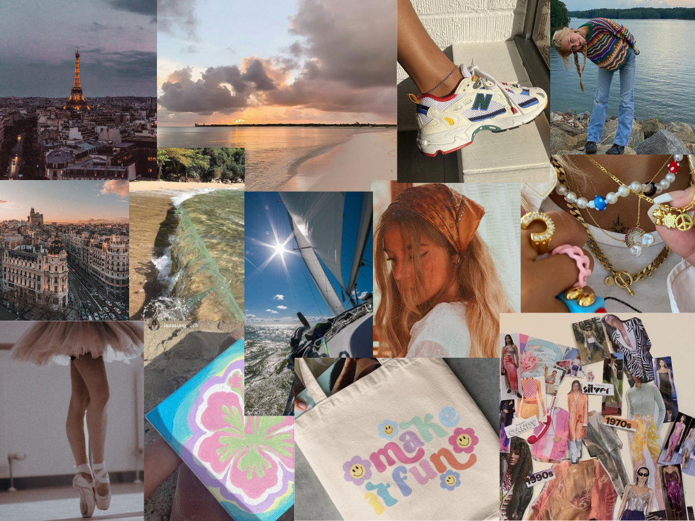

Dit zijn foto's die mij inspireren, die mij vrolijk maken, die iets over mij zeggen of die ik gewoon leuk vind.
Ik vind het leuk als mensen een eigen style hebben en ik wil graag een eigen style creëren. Ik vind het leuk om met mode bezig te zijn. Ik vind het leuk om mooie dingen te bezoeken. Ik hou van de zee, zeilen en zwemmen. Ik vind zonsondergangen prachtig en erg rustgevend. Ik houd van creatief bezig zijn. Ik houd van dansen en zeilen. 'Waarom zou je lopen als je ook kan dansen?'